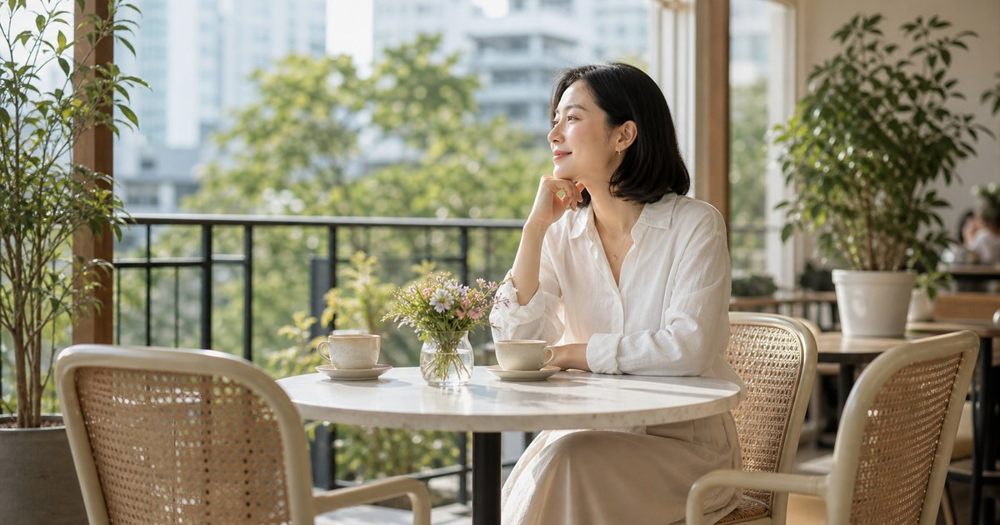

回台後的第一年：如何建立日常與重建高品質社交圈
回台第一年不用急著找回從前的人生，只要先讓城市裡有幾條你願意重複走的路。

返台後第一年，熟悉與陌生會同時存在。街道、語言、家人都像認識，生活節奏卻不一定立刻接得上。重建社交圈最好的入口，不是大型聚會，而是可重複的日常路線。
先把這個決定從情緒裡取出來
回台後的第一年：如何建立日常與重建高品質社交圈，表面上像是一個生活提問，實際上是在問：當身邊的關係、工作或家庭角色開始改變，如何替自己保留一個不被外界牽著走的日常。對剛回到台灣或回來不到一年的海歸喪偶讀者，需要重建日常、找人陪伴與試探社交圈的可行方法來說，真正困難的不是知道要振作，而是把下一步縮小到能執行的尺度。
Elite Fashion 的判斷是，這類人生階段不能寫成口號，也不適合用商品或速成清單包裝。文章的核心應該先處理節奏、空間、文件、支持系統與身體感受，再讓外部工具成為安靜的輔助。
這篇文章會避開過度勵志的語氣，把重點放在用固定路線、低壓邀約與可重複活動重新接回城市。如果一個安排不能讓明天早晨更清楚，它就先不是優先事項；如果一件用品不能回到生活動線，也不需要急著買。
- 先界定問題，再決定是否需要工具或商品。
- 先整理一週內會反覆出現的動線，不急著做長期承諾。
- 涉及財務、法律、醫療或心理支持時，應回到合格專業人員與官方資訊。
先建立三條生活路線
返台初期最需要的是路線感。找一間固定咖啡店、一條散步路線、一個能採買的市場或百貨，讓身體先知道城市不是抽象的，它有可以抵達的日常。
比較成熟的做法，是先把這件事拆成三層：今天要完成什麼、這週要穩住什麼、未來三個月需要誰協助。這種順序能避免人在情緒波動時，把所有問題都看成同一天要解決的事。
台灣城市生活的節奏很快，許多讀者白天還要開會、照顧家人、處理帳務或面對社交邀約。把城市路線與生活節點安排成固定流程，比把自己推向一次性大改造更容易留下餘裕。
Elite 嚴選
把社交放進低壓場合
高品質社交不是認識很多人，而是能在適當距離裡被理解。咖啡、茶、展覽、午餐或短暫散步，都比一次過長的聚會更適合重新開始。
這裡的關鍵不是把生活變得完美，而是讓每個角落知道自己的責任。玄關處理出門，桌面處理判斷，餐桌處理休息，臥室處理恢復；當空間有分工，人比較不容易在同一張桌子上同時面對所有壓力。
若文章只談心態，會太輕；若只談物品，又會太薄。真正有用的內容，是把低壓邀約與支持關係變成可以被看見、被拿取、被維持的日常秩序。
- 先重複路線，再擴大圈子。
- 邀約以短時間、明確結束點為主。
- 保留獨處日，不讓社交變成另一種壓力。
延伸選物只放在它真正有用的位置
這篇文章的商品置入只作為延伸選物，不把人生議題改寫成採買任務。適合出現的品項，是能支撐咖啡、茶、香氛、杯盤、包款的用品；它們的價值在於減少摩擦，而不是替讀者做決定。
選物時應先看使用頻率，再看品牌或外觀。每天會碰到的杯具、照明、收納、電源線、寢具、清潔或小型儀式用品，通常比偶爾才會使用的大型物件更能改變生活感。
所有 momo 商品資訊都應回到商品頁確認，價格、活動、庫存與規格都以商品頁公告為準；本文也不宣稱任何用品能解決情緒、健康、法律或財務問題。好的選物，是讓讀者下一步更容易，不是讓文章變得更吵。
不適合一次處理的事，要被放回專業邊界
返台適應若伴隨長期失眠、低落或社交退縮，請諮詢心理師、醫師或相關支持資源。本文提供一般生活節奏建議，不能取代心理或醫療專業。
若牽涉保險、稅務、繼承、醫療、心理創傷、長照或資產安排，文章只能提供一般整理方向，不能取代律師、會計師、醫師、心理師、理財或保險專業人員的個別判斷。這不是退縮，而是對讀者負責。
同樣地，情緒支持也不該被浪漫化成一個人撐過去。可以獨處，不代表必須孤立；可以有界線，也不代表拒絕協助。成熟的一人生活，是知道哪些事自己處理，哪些事交給制度、朋友或專業。
把下一步縮小到七天
未來七天，不需要完成整個人生重整。比較好的做法，是挑三件最小但有連續性的事：固定一間咖啡或茶飲地點、安排一場短邀約、整理外出包裡的必需品。只要這三件事能讓生活少一點混亂，就已經是方向。
一個人生活的質感，不是把家布置得像樣板，也不是把行程排得密不透風。它更像是每天替自己留一盞燈、一個乾淨杯子、一個可以不用解釋的時段，讓身體知道生活仍然有秩序。
真正值得完成的，不是一次性的轉變，而是能被重複的平靜。當早晨比較不慌、晚上比較能收尾，當需要的人與資料都放在找得到的位置，新的生活就已經開始成形。
同主題品牌參考
FAQ
這篇文章可以取代專業諮詢嗎？
不可以。本文僅供一般生活整理與判斷參考；若涉及財務、保險、稅務、法律、醫療、心理支持或長照安排，請諮詢合格專業人員並以官方資訊為準。
為什麼這類文章仍然放入延伸選物？
因為生活重整常常需要可被拿取的工具，例如照明、收納、杯具、寢具、清潔用品或工作設備。本文把商品放在輔助位置，不把人生議題寫成硬性採買清單。
如果只能先做一件事，應該從哪裡開始？
先從每天都會經過的動線開始，例如玄關、床邊、桌面或餐桌。讓一個小區域變得清楚，比一次重整整個家更容易持續。
下一步建議
若你正在整理新的生活階段，先從一週內最常重複的動線開始，再把需要專業協助的事項另外列出。
重要警語
本文僅供一般生活整理、關係界線與日常規劃參考，不構成法律、財務、保險、醫療、心理治療或個人化專業建議；涉及個別情況請諮詢合格專業人員，商品資訊請以商品頁公告為準。
本文含品牌／商品導購連結；若你透過部分商品連結前往選購，Elite Fashion 可能取得合作收益。本文仍以編輯判斷與使用情境整理為主，價格、規格、活動與庫存請以商品頁公告為準。